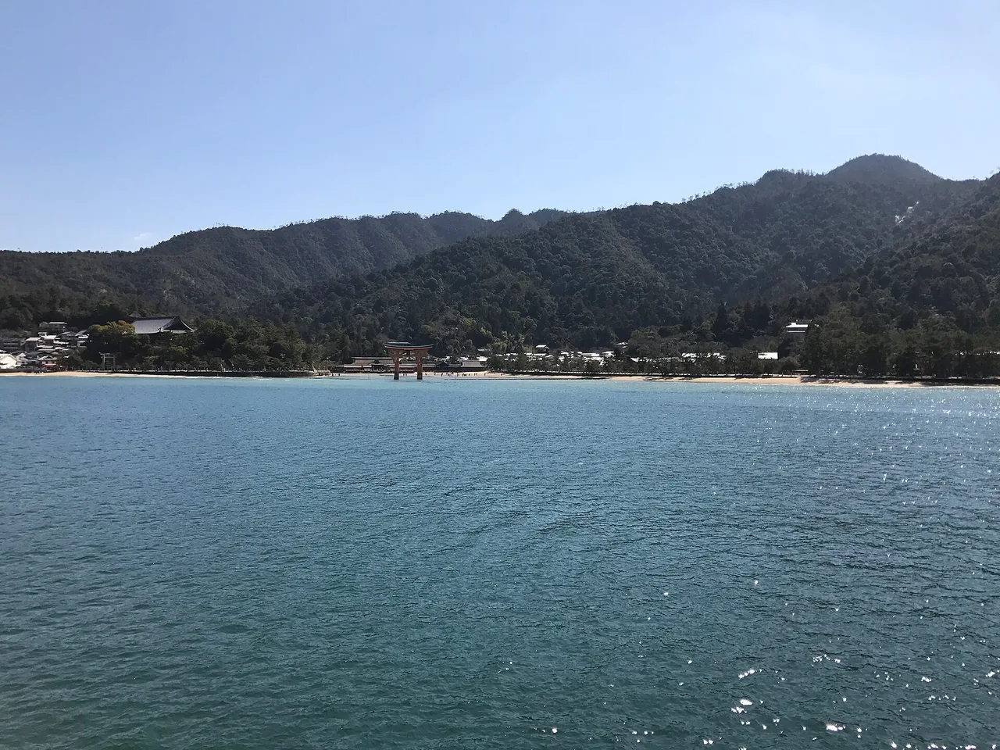

Hiroshima Travel Guide for Japanese Learners
A moving peace memorial and the floating torii of Miyajima.

Hiroshima pairs profound history with great beauty. The Peace Memorial Park commemorates 1945, while nearby Miyajima's Itsukushima Shrine seems to float at high tide.
History & background
Hiroshima (広島) became a global symbol of peace after the atomic bombing of 6 August 1945. Nearby Itsukushima Shrine (厳島神社) on Miyajima (宮島) has stood since the 12th century, its torii rising from the sea.
What to see
- Peace Memorial Park and the A-Bomb Dome (UNESCO)
- Itsukushima Shrine on Miyajima (UNESCO)
- Hiroshima Castle
- Shukkei-en garden
Hidden gems
- Hiroshima Prefectural Art Museum houses Japanese and Western works in a serene riverside setting, often quieter than major temples and worth a leisurely afternoon visit.
- Mitaki-dera Temple nestles in a forested valley with three waterfalls and moss-covered stone steps, offering peaceful hiking just outside the city center.
- Tomo no Ura is a charming port town 30 minutes from central Hiroshima with traditional merchant houses, local fish markets, and views of the Seto Inland Sea.
Some links above are affiliate links. We may earn a commission at no extra cost to you. We only list services we'd use ourselves.
What to eat
Hiroshima-style okonomiyaki (layered) and oysters.
Getting there & when to go
Getting there: Hiroshima is ~4h from Tokyo and ~1h25m from Osaka by shinkansen.
Best time: Any season; check the tide table to see Miyajima's torii 'floating'.
When to go — season by season
Mild and visitable year-round. Spring blossoms and autumn maples enhance Miyajima; check the tide tables to see the torii 'floating' versus walkable.
Local culture
Hiroshima's oyster culture runs deep—local farms line the Seto Inland Sea, and oyster season (October–March) sees them grilled fresh at street stalls and served raw at restaurants. The brininess pairs perfectly with local sake and tells the story of the region's maritime heritage.
Hiroshima-style okonomiyaki differs from Osaka's version: ingredients are layered rather than mixed, with noodles added to the batter, then cooked in a specific order on a flat griddle. Watching a skilled cook perform this choreography at a counter seat is as much about witnessing craft as eating.
A suggested visit
Spend a reflective morning at the Peace Memorial Park and Museum, then ferry to Miyajima for the floating torii, Itsukushima Shrine, and friendly deer. Hiroshima okonomiyaki makes the perfect dinner.
Seasonal tip: Visit Miyajima in early autumn (September–October) to avoid summer humidity and crowds, but check tide tables in advance—the torii typically 'floats' best 2–3 hours before and after high tide.
Local etiquette: At the A-Bomb Dome and Peace Memorial Park, maintain a quiet, respectful demeanor; photography is permitted but avoid selfies or casual poses near the memorial cenotaph, which honors the deceased.
Time your Miyajima visit with high tide for the floating torii, low tide to walk out to it.
Some links above are affiliate links. We may earn a commission at no extra cost to you. We only list services we'd use ourselves.
Common questions
Q. How long does it take to reach Hiroshima from major cities?
A. About 4 hours from Tokyo or 1 hour 25 minutes from Osaka by shinkansen. Book your ticket in advance during peak seasons to secure a seat.
Q. When is the best time to visit Miyajima's famous floating torii?
A. Any season works, but check the tide table before visiting Itsukushima Shrine—the torii appears to float only at high tide, creating that iconic Instagram moment.
Q. What should I eat in Hiroshima?
A. Try Hiroshima-style okonomiyaki, which layers ingredients differently than Osaka's version, and fresh oysters. Both reflect local culinary pride and are worth seeking out in dedicated restaurants.